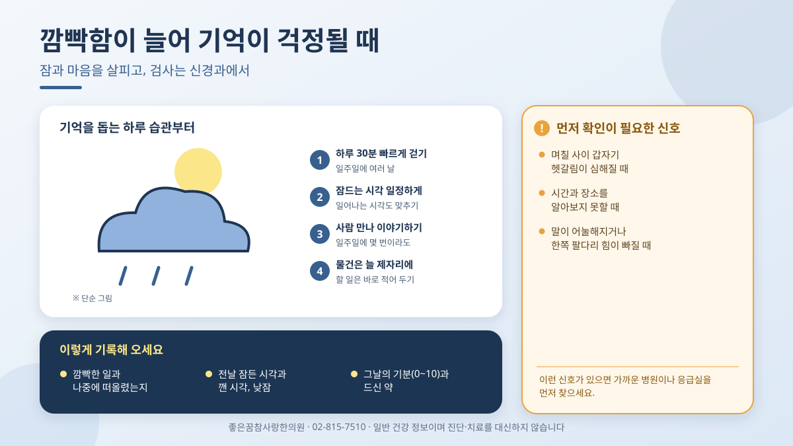

이종호 한의사 감수좋은꿈참사랑한의원 대표원장 (한의사 면허번호 19769)발행 2026-11-26 · 수정 2026-11-26
이 글의 차례
현관을 나서서 엘리베이터 앞에 섰는데, 가스 불을 껐는지 기억이 나지 않습니다. 다시 들어가 보면 잘 꺼져 있습니다. 마트에서는 사야 할 것을 세 가지 떠올리며 들어갔는데 계산대 앞에서 하나가 빠진 걸 압니다. 오랜만에 만난 지인의 이름은 입안에서만 맴돌고 끝내 나오지 않습니다.
이런 일이 한 번 두 번 쌓이면 마음 한쪽에 무거운 걱정이 자리 잡습니다. '혹시 치매가 시작된 건 아닐까.' 부모님이 비슷한 일을 겪으셨던 분이라면 그 걱정은 더 커집니다.
진료실에서 이 걱정을 조심스럽게 꺼내시는 분이 적지 않습니다. 다른 증상으로 오셨다가 진료가 끝나 갈 무렵 "그런데 요즘 깜빡깜빡해서요" 하고 말씀하십니다. 그만큼 입 밖으로 꺼내기 어려운 걱정이라는 것을 압니다.
기억력의 변화는 신경과에서 검사를 받아 정확히 확인하는 것이 먼저입니다. 한의원에서는 그 곁에서 기억에 영향을 주는 잠과 마음, 피로와 식사, 몸의 리듬을 함께 살핍니다.
깜빡하는 일이 모두 치매의 신호는 아닙니다. 잠을 못 잤거나, 걱정이 많거나, 너무 많은 일을 한꺼번에 하고 있을 때도 기억은 흔들립니다. 무엇이 기억을 흔들고 있는지 차분히 나누어 살피는 것이 시작입니다.
나이에 따른 건망과 경도인지장애, 치매는 어떻게 다를까요
나이가 들면 누구나 이름이 바로 떠오르지 않거나, 방에 들어가서 왜 왔는지 잊는 일이 늘어납니다. 이런 건망은 대개 힌트를 주면 떠오르고, 일상생활을 꾸려 가는 데에는 큰 어려움이 없습니다.
경도인지장애는 그보다 한 걸음 더 나아간 상태입니다. 같은 나이대보다 기억력이나 다른 인지 기능이 검사에서 뚜렷하게 떨어져 있지만, 아직 혼자서 일상생활을 대체로 해 나갈 수 있는 단계를 말합니다. 본인이나 가족이 변화를 느끼는 경우가 많습니다.
치매는 기억력과 판단력, 언어, 길 찾기 같은 여러 기능이 떨어져 혼자 일상생활을 꾸려 가기 어려워진 상태를 말합니다. 은행 업무, 약 챙기기, 요리처럼 여러 단계를 거치는 일에서 먼저 어려움이 드러나는 경우가 많습니다.
경도인지장애가 있다고 모두 치매로 이어지는 것은 아닙니다. 그대로 머물거나, 원인이 되는 다른 문제를 살피고 나면 오히려 나아지는 분도 있다고 알려져 있습니다. 그래서 일찍 확인하고 흐름을 지켜보는 일이 중요합니다.
이럴 때는 비교적 흔한 건망에 가깝습니다
- 이름이 바로 안 떠올랐지만 조금 뒤나 힌트를 들으면 떠오른다
- 물건 둔 곳을 잊었지만 되짚어 가면 찾는다
- 잊어버린 것을 스스로 알고 메모로 챙긴다
이럴 때는 진료로 확인해 보시길 권합니다
- 최근에 나눈 대화나 일어난 일을 통째로 기억하지 못한다
- 같은 질문을 짧은 시간 안에 여러 번 되풀이한다
- 익숙한 길에서 방향을 잃거나, 늘 하던 요리 순서가 헷갈린다
- 약 챙기기, 공과금 내기 같은 일을 자주 놓친다
- 가족이 먼저 변화를 걱정한다
왜 기억이 흐려질 수 있을까요
기억이 흐려졌다고 해서 그 원인이 모두 뇌의 퇴행 변화는 아닙니다. 다음과 같은 것들이 기억에 영향을 주기도 해서 함께 살핍니다.
잠
잠이 모자라거나 깊이 자지 못하면 다음 날 집중력과 기억력이 눈에 띄게 떨어집니다. 코골이가 심하고 자다가 숨이 멎는 듯하다는 말을 들으셨다면 수면 중 호흡 문제도 함께 확인해 보시길 권합니다.
우울과 불안
마음이 많이 가라앉거나 걱정이 머리를 가득 채우면, 새로운 정보가 들어갈 자리가 좁아집니다. 실제로 우울한 시기에 기억력이 떨어졌다가 마음이 회복되며 함께 돌아오는 분도 많습니다.
청력과 시력
잘 안 들리면 대화 내용을 처음부터 제대로 받아들이지 못해 '기억을 못 하는' 것처럼 보이기도 합니다. 듣는 데 힘을 많이 쓰면 머리도 쉽게 지칩니다. 청력과 시력 확인도 함께 챙기시길 권합니다.
약과 몸의 다른 병
수면제, 일부 진정제, 알레르기약, 소변 관련 약 가운데에는 기억과 집중에 영향을 줄 수 있는 것이 있다고 알려져 있습니다. 갑상선 기능, 비타민 B12 부족, 혈당과 혈압 문제도 기억에 영향을 줄 수 있어 혈액 검사로 함께 확인하는 경우가 많습니다.
걱정이 기억을 더 흐리게 할 때
기억이 걱정되기 시작하면 작은 실수 하나에도 마음이 철렁합니다. 그렇게 긴장한 채로 지내면 오히려 집중이 흩어져 깜빡하는 일이 더 늘어나는 고리가 생기기도 합니다.
진료실에서 이야기를 나누다 보면, 실제로 잊는 일보다 '잊을까 봐' 하는 걱정이 하루를 더 무겁게 만들고 있는 분이 많습니다. 검사로 지금의 상태를 확인하고 나면 그 걱정이 한결 가벼워졌다는 말씀도 자주 듣습니다.
걱정이 꼬리를 물 때는 종이에 걱정을 적어 보고, 그 옆에 지금 할 수 있는 일을 한 가지씩 적어 보세요. '검사 예약하기', '오늘 30분 걷기'처럼 손에 잡히는 일이 생기면 막연한 불안이 조금 가라앉습니다.
한의학에서는 어떻게 보아 왔을까요
한의학에서는 잘 잊는 것을 건망(健忘)이라 부르며 오래전부터 살펴 왔습니다. 마음을 너무 많이 쓰고 잠이 부족해 기운과 혈이 함께 지친 상태, 소화가 약해 몸이 쉽게 지치는 상태를 함께 보았습니다.
그래서 기억만 따로 보지 않고 잠의 깊이와 소화, 마음의 긴장, 피로를 함께 여쭙습니다. 이런 바탕을 살피는 일은 신경과 검사와 치료를 대신하는 것이 아니라, 그 곁에서 하루를 조금 더 편하게 만드는 일입니다.
어디서 어떻게 검사를 받나요
기억이 걱정된다면 먼저 신경과나 가까운 병원에서 상담을 받아 보세요. 간단한 인지 선별검사부터 시작해, 필요하면 더 자세한 신경심리검사와 혈액 검사, 뇌 영상 검사로 이어지는 경우가 많습니다.
동작구를 비롯해 각 지역 보건소와 치매안심센터에서도 인지 선별검사를 받을 수 있습니다. 대상과 절차는 센터마다 다를 수 있으니 미리 전화로 확인해 보시길 권합니다.
검사를 받는 일 자체가 무섭게 느껴지실 수 있습니다. 하지만 검사는 지금 내 상태를 알고, 다른 원인을 찾아 챙길 기회이기도 합니다. 결과가 괜찮다면 그 자체로 마음의 짐을 덜 수 있습니다.
귀와 눈을 챙기는 일
나이가 들며 잘 안 들리는데도 '아직 괜찮다'며 미루는 분이 많습니다. 그런데 듣는 일이 힘들면 대화를 피하게 되고, 사람을 덜 만나게 되면서 머리를 쓰는 기회도 줄어듭니다. 청력이 걱정된다면 이비인후과에서 검사를 받아 보시고, 필요하면 보청기를 상의해 보세요.
눈도 마찬가지입니다. 글씨가 잘 안 보이면 책과 신문을 멀리하게 됩니다. 안경 도수가 맞는지, 백내장 같은 변화는 없는지 안과에서 확인해 두시길 권합니다.
먼저 이렇게 여쭙니다
처음 오시면 저는 대략 이런 순서로 여쭙습니다. 기억나는 것부터 말씀해 주셔도 괜찮습니다. 가족이 함께 오시면 더 좋습니다.
- 언제부터 깜빡하는 일이 늘었다고 느끼셨나요?
- 어떤 일을 주로 잊으시나요? 최근 일, 이름, 약속, 물건 둔 곳 가운데?
- 잊은 것을 나중에 떠올리시나요, 아예 처음 듣는 것처럼 느끼시나요?
- 잠은 몇 시간 주무시고, 코골이나 숨 멎음이 있나요?
- 요즘 마음이 가라앉거나 걱정이 많지는 않으신가요?
- 지금 드시는 약과 영양제는 무엇인가요?
- 신경과나 보건소에서 검사를 받아 보셨나요?
기억만 여쭙지 않고 하루가 어떻게 흘러가는지도 함께 여쭙습니다. 사람을 만나는 일이 줄었는지, 바깥 활동을 하시는지, 끼니를 거르지는 않는지가 다음에 무엇부터 챙길지를 정해 줍니다.
일상에서 먼저 해 볼 수 있는 것
기억을 지키는 생활은 몸 전체를 돌보는 생활과 크게 다르지 않습니다. 아래에서 지금 할 수 있는 것 하나부터 골라 보세요.
- 하루 30분 정도 빠르게 걷기를 일주일에 여러 날 하기
- 잠자리에 드는 시각과 일어나는 시각을 일정하게 맞추기
- 사람을 만나 이야기 나누는 시간을 일주일에 몇 번이라도 갖기
- 새로운 것을 배우기(악기, 외국어, 그림, 손으로 하는 일)
- 열쇠, 지갑, 안경은 늘 같은 자리에 두는 '제자리' 정하기
- 해야 할 일은 달력이나 휴대폰 알림에 바로 적어 두기
머리를 쓰는 일은 혼자 퍼즐을 푸는 것도 좋지만, 다른 사람과 함께하는 활동이 더 다양한 자극을 줍니다. 복지관이나 문화센터의 모임, 산책 동호회처럼 꾸준히 나갈 곳을 하나 만들어 두시길 권합니다.
식사는 채소와 생선, 콩, 견과류를 고루 담고 짜고 단 음식은 줄이는 방향이 좋습니다. 혈압과 혈당, 콜레스테롤 관리는 뇌로 가는 혈관을 지키는 일이기도 합니다. 내과에서 받은 약은 꾸준히 드세요.
메모하는 습관을 '기억력이 나빠서'라고 부끄러워하지 않으셨으면 합니다. 메모는 기억을 돕는 좋은 도구입니다. 메모 덕분에 놓치는 일이 줄면 마음의 부담도 함께 줄어듭니다.
한의원에서 함께 살필 수 있는 경우
- 신경과 검사나 진료를 받으면서 잠과 피로, 마음을 함께 살피고 싶은 경우
- 잠을 설치고 낮에 머리가 맑지 않으며 집중이 흐려진 경우
- 기억 걱정 때문에 불안이 커지고 마음이 가라앉은 경우
- 소화가 약하고 쉽게 지쳐 생활 리듬이 흐트러진 경우
좋은꿈참사랑한의원에 처음 오시면 신경과나 보건소 검사 여부와 드시는 약을 먼저 확인합니다. 아직 검사를 받지 않으셨다면 그 확인부터 권해 드립니다. 그다음 양손을 올려 달라고 말씀드리고 맥을 짚으며 잠과 소화, 대소변, 땀, 기운을 여쭙습니다.
진찰 뒤에는 상태에 따라 굳은 목과 어깨, 손발과 머리의 자리를 살피며 침을 상의할 수 있습니다. 잠과 긴장을 함께 살피는 것이 기억을 흔드는 요인을 덜어 내는 데 도움이 될 수 있습니다.
한약은 진찰 뒤 필요하다고 판단될 때 상의합니다. 드시는 약이 많은 어르신은 약 봉투나 처방전을 그대로 가져오시면 함께 확인하기 쉽습니다. 함께 드셔도 되는지 신중하게 확인하고 정합니다. 처방받은 약은 처방한 의사와 상의 없이 줄이거나 끊지 않습니다.
다시 오시면 지난번 이후 잠과 마음, 깜빡한 일이 어땠는지부터 이어서 여쭙습니다.
이렇게 기록해 오시면 상담이 쉬워집니다
기억의 변화는 본인보다 곁에 있는 분이 먼저 알아채는 경우가 많습니다. 본인과 가족이 함께 한 달만 적어 보세요.
- 깜빡한 일이 무엇이었는지 한 줄로(예: 약 먹은 것을 잊고 또 먹으려 함)
- 나중에 떠올렸는지, 끝내 떠올리지 못했는지
- 그 전날 잠든 시각과 깬 시각, 낮잠
- 그날의 기분(0부터 10까지)과 걱정거리
- 외출, 운동, 사람 만난 일
- 드신 약과 시각
휴대폰 메모에 짧게 적어도 충분합니다. 빠진 날이 있어도 괜찮습니다. 기억나는 줄부터 같이 펼쳐 보겠습니다.
가족이 함께 알아 두면 좋은 것
가족이 기억 걱정을 꺼낼 때는 "요즘 왜 이렇게 깜빡해?"보다 "요즘 피곤해 보여서 같이 검사 한번 받아 볼까?"처럼 부드럽게 말을 건네 주세요. 기억 이야기는 자존심과 닿아 있어, 다그치면 마음의 문이 닫히기 쉽습니다.
잊은 일을 지적하기보다 달력과 메모를 함께 쓰는 식으로 도와드리세요. 검사를 받으러 갈 때 함께 가 주시면, 평소 모습을 의사에게 전할 수 있어 큰 도움이 됩니다.
이런 증상은 먼저 확인이 필요합니다
- 며칠 사이에 갑자기 헷갈림이 심해지고 시간과 장소를 알아보지 못하는 경우
- 말이 어눌해지거나 한쪽 팔다리에 힘이 빠지는 증상이 함께 온 경우
이런 신호가 있으면 한의원보다 가까운 병원이나 응급실을 먼저 찾으세요.
기억이 흐려질까 두려운 마음은 누구에게나 무겁습니다. 그 걱정을 혼자 품고 계셨다면 이제 함께 나누어 보셨으면 합니다. 서두르지 않고, 기억을 흔드는 것들부터 하나씩 함께 살펴보겠습니다. 다음에 오시면 지난 한 달 동안 잠과 마음이 어땠는지부터 여쭙겠습니다.
함께 읽으면 좋은 글
- 부모님 기억력이 걱정될 때 생활을 어떻게 관찰하고 메모하나요?
- 동작구 어르신 한방 사업(치매예방·찾아가는 실버한방케어)은 어떻게 확인하나요?
- 기분이 2주 넘게 가라앉고 잠·입맛·흥미가 떨어질 때는 어떻게 살피나요?
- 파킨슨병으로 신경과 약을 먹고 있을 때 한의원에서는 무엇을 함께 살피나요?

여쭙는 것
- 언제부터 깜빡하는 일이 늘었다고 느끼셨나요?
- 어떤 일을 주로 잊으시나요? 최근 일, 이름, 약속, 물건 둔 곳 가운데?
- 잊은 것을 나중에 떠올리시나요, 아예 처음 듣는 것처럼 느끼시나요?
생활에서 해 볼 것
- 하루 30분 정도 빠르게 걷기를 일주일에 여러 날 하기
- 잠자리에 드는 시각과 일어나는 시각을 일정하게 맞추기
- 사람을 만나 이야기 나누는 시간을 일주일에 몇 번이라도 갖기
한의원에서 함께 살필 것
- 신경과 검사나 진료를 받으면서 잠과 피로, 마음을 함께 살피고 싶은 경우
- 잠을 설치고 낮에 머리가 맑지 않으며 집중이 흐려진 경우
- 기억 걱정 때문에 불안이 커지고 마음이 가라앉은 경우
먼저 확인이 필요한 신호
- 며칠 사이에 갑자기 헷갈림이 심해지고 시간과 장소를 알아보지 못하는 경우
- 말이 어눌해지거나 한쪽 팔다리에 힘이 빠지는 증상이 함께 온 경우
한눈에 보는 표
| 구분 | 핵심 |
|---|---|
| 여쭙는 것 | 언제부터 깜빡하는 일이 늘었다고 느끼셨나요? 어떤 일을 주로 잊으시나요? 최근 일, 이름, 약속, 물건 둔 곳 가운데? |
| 생활에서 해 볼 것 | 하루 30분 정도 빠르게 걷기를 일주일에 여러 날 하기 잠자리에 드는 시각과 일어나는 시각을 일정하게 맞추기 |
| 한의원에서 함께 살필 것 | 신경과 검사나 진료를 받으면서 잠과 피로, 마음을 함께 살피고 싶은 경우 잠을 설치고 낮에 머리가 맑지 않으며 집중이 흐려진 경우 |
| 먼저 확인이 필요한 신호 | 며칠 사이에 갑자기 헷갈림이 심해지고 시간과 장소를 알아보지 못하는 경우 말이 어눌해지거나 한쪽 팔다리에 힘이 빠지는 증상이 함께 온 경우 |
자주 묻는 질문
이름이 자주 생각나지 않으면 치매인가요?
이름이 바로 안 떠오르는 일은 나이가 들면서 흔히 겪습니다. 힌트를 들으면 떠오르고 일상생활에 큰 어려움이 없다면 흔한 건망에 가까운 경우가 많습니다. 다만 걱정이 계속된다면 신경과나 보건소에서 선별검사를 받아 보시길 권합니다.
경도인지장애라고 들으면 모두 치매로 이어지나요?
모두 그런 것은 아닙니다. 그대로 머물거나, 잠·우울·약·갑상선 같은 다른 원인을 살피고 나서 나아지는 경우도 있다고 알려져 있습니다. 신경과에서 정기적으로 흐름을 확인하시길 권합니다.
한의원에서 기억력 검사를 받을 수 있나요?
기억력 검사와 진단은 신경과나 보건소, 치매안심센터에서 받으시길 권합니다. 한의원에서는 그 곁에서 잠과 마음, 피로처럼 기억에 영향을 주는 것들을 함께 살핍니다.
수면제를 먹고 있는데 기억력에 영향이 있나요?
일부 수면제와 진정제는 기억과 집중에 영향을 줄 수 있다고 알려져 있습니다. 스스로 끊지 마시고 처방한 의사와 상의해 주세요.
부모님이 검사를 거부하시면 어떻게 하나요?
기억 이야기보다 건강검진이나 잠, 피로를 핑계로 함께 병원에 가 보시는 방법이 있습니다. 다그치기보다 부모님이 편하게 느끼는 말로 권해 보세요.
좋은꿈참사랑한의원은 재진 때 지난번 이야기부터 이어서 여쭙니다. 진료시간과 예약은 오시는 길에서 확인하세요.
어디서 상담받을 수 있나요?
좋은꿈참사랑한의원은 서울 동작구 만양로2길 2 신성빌딩 3층·5층(서울 동작구 상도동, 7호선 상도역 3번 출구 근처)에 있습니다. 한의사 3명(이종호 대표원장, 조영기 수석진료원장, 정원영 진료원장)이 진료합니다. 진료시간은 평일 09:30~20:00(점심 13:00~14:00), 토·일·공휴일 09:30~15:00이며, 방문 전 전화로 확인을 권합니다. 예약은 네이버 예약, 카카오톡 상담, 전화 02-815-7510로 받습니다.
이 글은 일반적인 건강 정보이며 개인의 진단이나 치료를 대신하지 않습니다. 증상이 있거나 복용 중인 약이 있다면 진료를 통해 확인하세요. 치료 효과는 개인마다 다를 수 있습니다.
작성 기준: 일반적으로 알려져 있는 건강 정보를 참고해 정리했습니다(대표원장 감수). 증상 기록은 1~2주 동안 하루 1회, 비슷한 시간에 적어 오시면 지난 상태와 비교하기 쉽습니다.